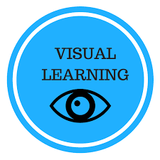
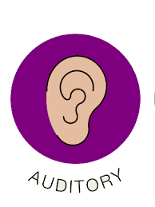

Visual Learning

The visual learning style, often referred to as the spatial learning style, is a way of learning in which information is associated with images. This learning style requires that learners first see what they are expected to know. People with a visual learning style are often referred to as visual-spatial learners.
Visual learners have specific characteristics that make their learning method unique typically:
- Remember what they read rather than what they hear
- Prefer reading a story rather than listening to it
- Learn from seeing things written out on a chalkboard
- Use diagrams and charts to understand ideas and concepts
- Take notes during class or while listening to presentations
- Study by looking over things
Audial Learning

The auditory learning style means a person learns best by listening. Music, video clips and conversations are their ideal way of learning. Auditory learners tend to do well in a traditional school environment listening to lectures, and also contributing to discussions
People who are auditory-aural learners usually share these characteristics:
- Talk frequently, to self and to others
- Prefers spoken directions
- Have difficulty concentrating in noisy environments
- Enjoy lectures and discussions
- Remember names, not faces
- Express emotion by tone and volume of voice
Read&Write Learning

This preference uses the printed word as the most important way to convey and receive information.
People with a Read/Write preference prefer:
- to write and read. They like words that have interesting meanings and backgrounds.
- to use lists (a, b, c, d, and 1, 2, 3, 4) and to order things into categories.
- to arrange words into hierarchies and points; order and structure in anything presented
- extracting meanings from headings and titles
- correcting mistakes
- clarity in what has been written
- challenging rules and regulations because of their wording
- people who write or speak using challenging words